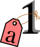

Tutorial: Objects and Classes in Python and Sage¶
Author: Florent Hivert <florent.hivert@univ-rouen.fr>
This tutorial is an introduction to object-oriented programming in Python and Sage. It requires basic knowledge about imperative/procedural programming (the most common programming style) – that is, conditional instructions, loops, functions (see the “Programming” section of the Sage tutorial) – but no further knowledge about objects and classes is assumed. It is designed as an alternating sequence of formal introduction and exercises. Solutions to the exercises are given at the end.
Foreword: variables, names and objects¶
As an object-oriented language, Python’s ‘’variables’’ behavior may be surprising for people used to imperative languages like C or Maple. The reason is that they are not variables but names.
The following explanation is borrowed from David Goodger.
Other languages have “variables”¶
In many other languages, assigning to a variable puts a value into a box.
int a = 1;
|

|
Box “a” now contains an integer 1.
Assigning another value to the same variable replaces the contents of the box:
a = 2;
|
Now box “a” contains an integer 2.
Assigning one variable to another makes a copy of the value and puts it in the new box:
int b = a;
|

|
“b” is a second box, with a copy of integer 2. Box “a” has a separate copy.
Python has “names”¶
In Python, a “name” or “identifier” is like a parcel tag (or nametag) attached to an object.
a = 1
|
 |
Here, an integer 1 object has a tag labelled “a”.
If we reassign to “a”, we just move the tag to another object:
a = 2
|

|

|
Now the name “a” is attached to an integer 2 object.
The original integer 1 object no longer has a tag “a”. It may live on, but we can’t get to it through the name “a”. (When an object has no more references or tags, it is removed from memory.)
If we assign one name to another, we’re just attaching another nametag to an existing object:
b = a
|

|
The name “b” is just a second tag bound to the same object as “a”.
Although we commonly refer to “variables” even in Python (because it’s common terminology), we really mean “names” or “identifiers”. In Python, “variables” are nametags for values, not labelled boxes.
Warning
As a consequence, when there are two tags “a” and “b” on the same object, modifying the object tagged “b” also modifies the object tagged “a”:
sage: a = [1,2,3]
sage: b = a
sage: b[1] = 0
sage: a
[1, 0, 3]
>>> from sage.all import *
>>> a = [Integer(1),Integer(2),Integer(3)]
>>> b = a
>>> b[Integer(1)] = Integer(0)
>>> a
[1, 0, 3]
Note that reassigning the tag “b” (rather than modifying the object with that tag) doesn’t affect the object tagged “a”:
sage: b = 7
sage: b
7
sage: a
[1, 0, 3]
>>> from sage.all import *
>>> b = Integer(7)
>>> b
7
>>> a
[1, 0, 3]
Object-oriented programming paradigm¶
The object-oriented programming paradigm relies on the two following fundamental rules:
Anything of the real (or mathematical) world which needs to be manipulated by the computer is modeled by an object.
Each object is an instance of some class.
At this point, those two rules are a little meaningless, so let’s give some more or less precise definitions of the terms:
- object
a portion of memory which contains the information needed to model the real world thing.
- class
defines the data structure used to store the objects which are instances of the class together with their behavior.
Let’s start with some examples: We consider the vector space over \(\QQ\) whose basis is indexed by permutations, and a particular element in it:
sage: F = CombinatorialFreeModule(QQ, Permutations())
sage: el = 3*F([1,3,2])+ F([1,2,3])
sage: el
B[[1, 2, 3]] + 3*B[[1, 3, 2]]
>>> from sage.all import *
>>> F = CombinatorialFreeModule(QQ, Permutations())
>>> el = Integer(3)*F([Integer(1),Integer(3),Integer(2)])+ F([Integer(1),Integer(2),Integer(3)])
>>> el
B[[1, 2, 3]] + 3*B[[1, 3, 2]]
(For each permutation, say [1, 3, 2], the corresponding element in
F is denoted by B[[1, 3, 2]] – in a CombinatorialFreeModule,
if an element is indexed by x, then by default its print
representation is B[x].)
In Python, everything is an object so there isn’t any difference between types
and classes. One can get the class of the object el by:
sage: type(el)
<class 'sage.combinat.free_module.CombinatorialFreeModule_with_category.element_class'>
>>> from sage.all import *
>>> type(el)
<class 'sage.combinat.free_module.CombinatorialFreeModule_with_category.element_class'>
As such, this is not very informative. We’ll come back to it later. The data
associated to objects are stored in so-called attributes. They are
accessed through the syntax obj.attribute_name. For an element of a
combinatorial free module, the main attribute is called
_monomial_coefficients. It is a dictionary associating coefficients to
indices:
sage: el._monomial_coefficients
{[1, 2, 3]: 1, [1, 3, 2]: 3}
>>> from sage.all import *
>>> el._monomial_coefficients
{[1, 2, 3]: 1, [1, 3, 2]: 3}
Modifying the attribute modifies the objects:
sage: el._monomial_coefficients[Permutation([3,2,1])] = 1/2
sage: el
B[[1, 2, 3]] + 3*B[[1, 3, 2]] + 1/2*B[[3, 2, 1]]
>>> from sage.all import *
>>> el._monomial_coefficients[Permutation([Integer(3),Integer(2),Integer(1)])] = Integer(1)/Integer(2)
>>> el
B[[1, 2, 3]] + 3*B[[1, 3, 2]] + 1/2*B[[3, 2, 1]]
Warning
as a user, you are not supposed to do such a modification by yourself (see note on private attributes below).
As an element of a vector space, el has a particular behavior:
sage: 2*el
2*B[[1, 2, 3]] + 6*B[[1, 3, 2]] + B[[3, 2, 1]]
sage: sorted(el.support())
[[1, 2, 3], [1, 3, 2], [3, 2, 1]]
sage: el.coefficient([1, 2, 3])
1
>>> from sage.all import *
>>> Integer(2)*el
2*B[[1, 2, 3]] + 6*B[[1, 3, 2]] + B[[3, 2, 1]]
>>> sorted(el.support())
[[1, 2, 3], [1, 3, 2], [3, 2, 1]]
>>> el.coefficient([Integer(1), Integer(2), Integer(3)])
1
The behavior is defined through methods (support, coefficient). Note
that this is true even for equality, printing or mathematical operations. For
example, the call a == b actually is translated to the method call
a.__eq__(b). The names of those special methods which are usually called
through operators are fixed by the Python language and are of the form
__name__. Examples include __eq__ and __le__ for operators == and
<=, __repr__ (see Sage specifics about classes) for printing, __add__ and
__mult__ for operators + and *. See
http://docs.python.org/library/ for a complete list.
sage: el.__eq__(F([1,3,2]))
False
sage: el.__repr__()
'B[[1, 2, 3]] + 3*B[[1, 3, 2]] + 1/2*B[[3, 2, 1]]'
sage: el.__mul__(2)
2*B[[1, 2, 3]] + 6*B[[1, 3, 2]] + B[[3, 2, 1]]
>>> from sage.all import *
>>> el.__eq__(F([Integer(1),Integer(3),Integer(2)]))
False
>>> el.__repr__()
'B[[1, 2, 3]] + 3*B[[1, 3, 2]] + 1/2*B[[3, 2, 1]]'
>>> el.__mul__(Integer(2))
2*B[[1, 2, 3]] + 6*B[[1, 3, 2]] + B[[3, 2, 1]]
Note
We now create a custom Element
class to explain the details of how attributes work in Python
(you can ignore the parent in the code below, that is not
relevant here):
sage: from sage.structure.element import Element
sage: class MyElt(Element):
....: def __init__(self, parent, val):
....: super(MyElt, self).__init__(parent)
....: self.value = val
sage: el = MyElt(val=42, parent=ZZ)
sage: el
Generic element of a structure
>>> from sage.all import *
>>> from sage.structure.element import Element
>>> class MyElt(Element):
... def __init__(self, parent, val):
... super(MyElt, self).__init__(parent)
... self.value = val
>>> el = MyElt(val=Integer(42), parent=ZZ)
>>> el
Generic element of a structure
The class is stored in a particular attribute called __class__,
and the normal attributes are stored in a dictionary called __dict__:
sage: el.__dict__
{'value': 42}
sage: el.__class__
<class '__main__.MyElt'>
>>> from sage.all import *
>>> el.__dict__
{'value': 42}
>>> el.__class__
<class '__main__.MyElt'>
Some particular actions modify the attributes of el:
sage: el.rename("bla")
sage: el
bla
sage: el.__dict__
{'_SageObject__custom_name': 'bla', 'value': 42}
>>> from sage.all import *
>>> el.rename("bla")
>>> el
bla
>>> el.__dict__
{'_SageObject__custom_name': 'bla', 'value': 42}
Lots of Sage objects are not Python objects but compiled Cython
objects. Python sees them as builtin objects and you do not have
access to some of their internal data structure. For example, the
base class Element stores the parent of el as a Cython
attribute _parent but it does not appear in the __dict__
and we cannot access it from Python.
Some examples of Cython classes (technically,
extension types)
in Sage include integers and permutation group elements. These do
not have a __dict__ at all:
sage: e = Integer(9)
sage: type(e)
<class 'sage.rings.integer.Integer'>
sage: e.__dict__
Traceback (most recent call last):
...
AttributeError: 'sage.rings.integer.Integer' object has no attribute '__dict__'...
sage: id4 = SymmetricGroup(4).one()
sage: type(id4)
<class 'sage.groups.perm_gps.permgroup_element.SymmetricGroupElement'>
sage: id4.__dict__
Traceback (most recent call last):
...
AttributeError: 'sage.groups.perm_gps.permgroup_element.SymmetricGroupElement' object has no attribute '__dict__'...
>>> from sage.all import *
>>> e = Integer(Integer(9))
>>> type(e)
<class 'sage.rings.integer.Integer'>
>>> e.__dict__
Traceback (most recent call last):
...
AttributeError: 'sage.rings.integer.Integer' object has no attribute '__dict__'...
>>> id4 = SymmetricGroup(Integer(4)).one()
>>> type(id4)
<class 'sage.groups.perm_gps.permgroup_element.SymmetricGroupElement'>
>>> id4.__dict__
Traceback (most recent call last):
...
AttributeError: 'sage.groups.perm_gps.permgroup_element.SymmetricGroupElement' object has no attribute '__dict__'...
Note
Each object corresponds to a portion of memory called its identity in
Python. You can get the identity using id:
sage: el = Integer(9)
sage: id(el) # random
139813642977744
sage: el1 = el; id(el1) == id(el)
True
sage: el1 is el
True
>>> from sage.all import *
>>> el = Integer(Integer(9))
>>> id(el) # random
139813642977744
>>> el1 = el; id(el1) == id(el)
True
>>> el1 is el
True
In Python (and therefore in Sage), two objects with the same identity will be equal, but the converse is not true in general. Thus the identity function is different from mathematical identity:
sage: el2 = Integer(9)
sage: el2 == el1
True
sage: el2 is el1
False
sage: id(el2) == id(el)
False
>>> from sage.all import *
>>> el2 = Integer(Integer(9))
>>> el2 == el1
True
>>> el2 is el1
False
>>> id(el2) == id(el)
False
Summary¶
To define some object, you first have to write a class. The class will define the methods and the attributes of the object.
- method
particular kind of function associated with an object used to get information about the object or to manipulate it.
- attribute
variable where information about the object is stored.
An example: glass of beverage in a restaurant¶
Let’s write a small class about glasses in a restaurant:
sage: class Glass():
....: def __init__(self, size):
....: assert size > 0
....: self._size = float(size) # an attribute
....: self._content = float(0.0) # another attribute
....: def __repr__(self):
....: if self._content == 0.0:
....: return "An empty glass of size %s"%(self._size)
....: else:
....: return "A glass of size %s cl containing %s cl of water"%(
....: self._size, self._content)
....: def fill(self):
....: self._content = self._size
....: def empty(self):
....: self._content = float(0.0)
>>> from sage.all import *
>>> class Glass():
... def __init__(self, size):
... assert size > Integer(0)
... self._size = float(size) # an attribute
... self._content = float(RealNumber('0.0')) # another attribute
... def __repr__(self):
... if self._content == RealNumber('0.0'):
... return "An empty glass of size %s"%(self._size)
... else:
... return "A glass of size %s cl containing %s cl of water"%(
... self._size, self._content)
... def fill(self):
... self._content = self._size
... def empty(self):
... self._content = float(RealNumber('0.0'))
Let’s create a small glass:
sage: myGlass = Glass(10); myGlass
An empty glass of size 10.0
sage: myGlass.fill(); myGlass
A glass of size 10.0 cl containing 10.0 cl of water
sage: myGlass.empty(); myGlass
An empty glass of size 10.0
>>> from sage.all import *
>>> myGlass = Glass(Integer(10)); myGlass
An empty glass of size 10.0
>>> myGlass.fill(); myGlass
A glass of size 10.0 cl containing 10.0 cl of water
>>> myGlass.empty(); myGlass
An empty glass of size 10.0
Some comments:
The definition of the class
Glassdefines two attributes,_sizeand_content. It defines four methods,__init__,__repr__,fill, andempty. (Any instance of this class will also have other attributes and methods, inherited from the classobject. See Inheritance below.)The method
__init__is used to initialize the object: it is used by the so-called constructor of the class that is executed when callingGlass(10).The method
__repr__returns a string which is used to print the object, for example in this case when evaluatingmyGlass.
Note
Private Attributes
Most of the time, in order to ensure consistency of the data structures, the user is not supposed to directly change certain attributes of an object. Those attributes are called private. Since there is no mechanism to ensure privacy in Python, the convention is the following: private attributes have names beginning with an underscore.
As a consequence, attribute access is only made through methods. Methods for reading or writing a private attribute are called accessors.
Methods which are only for internal use are also prefixed with an underscore.
Exercises¶
Add a method
is_emptywhich returns true if a glass is empty.Define a method
drinkwith a parameteramountwhich allows one to partially drink the water in the glass. Raise an error if one asks to drink more water than there is in the glass or a negative amount of water.Allows the glass to be filled with wine, beer or another beverage. The method
fillshould accept a parameterbeverage. The beverage is stored in an attribute_beverage. Update the method__repr__accordingly.Add an attribute
_cleanand methodsis_cleanandwash. At the creation a glass is clean, as soon as it’s filled it becomes dirty, and it must be washed to become clean again.Test everything.
Make sure that everything is tested.
Test everything again.
Inheritance¶
The problem: objects of different classes may share a common behavior.
For example, if one wants to deal with different dishes (forks, spoons, …),
then there is common behavior (becoming dirty and being washed). So the
different classes associated to the different kinds of dishes should have the
same clean, is_clean and wash methods. But copying and pasting
code is very bad for maintenance: mistakes are copied, and to change anything
one has to remember the location of all the copies. So there is a need for a
mechanism which allows the programmer to factorize the common behavior. It is called
inheritance or sub-classing: one writes a base class which factorizes
the common behavior and then reuses the methods from this class.
We first write a small class ‘’AbstractDish’’ which implements the “clean-dirty-wash” behavior:
sage: class AbstractDish():
....: def __init__(self):
....: self._clean = True
....: def is_clean(self):
....: return self._clean
....: def state(self):
....: return "clean" if self.is_clean() else "dirty"
....: def __repr__(self):
....: return "An unspecified %s dish"%self.state()
....: def _make_dirty(self):
....: self._clean = False
....: def wash(self):
....: self._clean = True
>>> from sage.all import *
>>> class AbstractDish():
... def __init__(self):
... self._clean = True
... def is_clean(self):
... return self._clean
... def state(self):
... return "clean" if self.is_clean() else "dirty"
... def __repr__(self):
... return "An unspecified %s dish"%self.state()
... def _make_dirty(self):
... self._clean = False
... def wash(self):
... self._clean = True
Now one can reuse this behavior within a class Spoon:
sage: class Spoon(AbstractDish): # Spoon inherits from AbstractDish
....: def __repr__(self):
....: return "A %s spoon"%self.state()
....: def eat_with(self):
....: self._make_dirty()
>>> from sage.all import *
>>> class Spoon(AbstractDish): # Spoon inherits from AbstractDish
... def __repr__(self):
... return "A %s spoon"%self.state()
... def eat_with(self):
... self._make_dirty()
Let’s test it:
sage: s = Spoon(); s
A clean spoon
sage: s.is_clean()
True
sage: s.eat_with(); s
A dirty spoon
sage: s.is_clean()
False
sage: s.wash(); s
A clean spoon
>>> from sage.all import *
>>> s = Spoon(); s
A clean spoon
>>> s.is_clean()
True
>>> s.eat_with(); s
A dirty spoon
>>> s.is_clean()
False
>>> s.wash(); s
A clean spoon
Summary¶
Any class can reuse the behavior of another class. One says that the subclass inherits from the superclass or that it derives from it.
Any instance of the subclass is also an instance of its superclass:
sage: type(s) <class '__main__.Spoon'> sage: isinstance(s, Spoon) True sage: isinstance(s, AbstractDish) True
>>> from sage.all import * >>> type(s) <class '__main__.Spoon'> >>> isinstance(s, Spoon) True >>> isinstance(s, AbstractDish) True
If a subclass redefines a method, then it replaces the former one. One says that the subclass overloads the method. One can nevertheless explicitly call the hidden superclass method.
sage: s.__repr__() 'A clean spoon' sage: Spoon.__repr__(s) 'A clean spoon' sage: AbstractDish.__repr__(s) 'An unspecified clean dish'
>>> from sage.all import * >>> s.__repr__() 'A clean spoon' >>> Spoon.__repr__(s) 'A clean spoon' >>> AbstractDish.__repr__(s) 'An unspecified clean dish'
Note
Advanced superclass method call
Sometimes one wants to call an overloaded method without knowing in which
class it is defined. To do this, use the super operator:
sage: super(Spoon, s).__repr__()
'An unspecified clean dish'
>>> from sage.all import *
>>> super(Spoon, s).__repr__()
'An unspecified clean dish'
A very common usage of this construct is to call the __init__ method of the
superclass:
sage: class Spoon(AbstractDish):
....: def __init__(self):
....: print("Building a spoon")
....: super(Spoon, self).__init__()
....: def __repr__(self):
....: return "A %s spoon"%self.state()
....: def eat_with(self):
....: self._make_dirty()
sage: s = Spoon()
Building a spoon
sage: s
A clean spoon
>>> from sage.all import *
>>> class Spoon(AbstractDish):
... def __init__(self):
... print("Building a spoon")
... super(Spoon, self).__init__()
... def __repr__(self):
... return "A %s spoon"%self.state()
... def eat_with(self):
... self._make_dirty()
>>> s = Spoon()
Building a spoon
>>> s
A clean spoon
Exercises¶
Modify the class
Glassesso that it inherits fromDish.Write a class
Platewhose instance can contain any meal together with a classFork. Avoid as much as possible code duplication (hint: you can write a factorized classContainerDish).Test everything.
Sage specifics about classes¶
Compared to Python, Sage has particular ways to handle objects:
Any classes for mathematical objects in Sage should inherit from
SageObjectrather than fromobject. Most of the time, they actually inherit from a subclass such asParentorElement.Printing should be done through
_repr_instead of__repr__to allow for renaming.More generally, Sage-specific special methods are usually named
_meth_rather than__meth__. For example, lots of classes implement_hash_which is used and cached by__hash__. In the same vein, elements of a group usually implement_mul_, so that there is no need to take care about coercions as they are done in__mul__.
For more details, see the Sage Developer’s Guide.
Solutions to the exercises¶
Here is a solution to the first exercise:
sage: class Glass(): ....: def __init__(self, size): ....: assert size > 0 ....: self._size = float(size) ....: self.wash() ....: def __repr__(self): ....: if self._content == 0.0: ....: return "An empty glass of size %s"%(self._size) ....: else: ....: return "A glass of size %s cl containing %s cl of %s"%( ....: self._size, self._content, self._beverage) ....: def content(self): ....: return self._content ....: def beverage(self): ....: return self._beverage ....: def fill(self, beverage = "water"): ....: if not self.is_clean(): ....: raise ValueError("Don't want to fill a dirty glass") ....: self._clean = False ....: self._content = self._size ....: self._beverage = beverage ....: def empty(self): ....: self._content = float(0.0) ....: def is_empty(self): ....: return self._content == 0.0 ....: def drink(self, amount): ....: if amount <= 0.0: ....: raise ValueError("amount must be positive") ....: elif amount > self._content: ....: raise ValueError("not enough beverage in the glass") ....: else: ....: self._content -= float(amount) ....: def is_clean(self): ....: return self._clean ....: def wash(self): ....: self._content = float(0.0) ....: self._beverage = None ....: self._clean = True
>>> from sage.all import * >>> class Glass(): ... def __init__(self, size): ... assert size > Integer(0) ... self._size = float(size) ... self.wash() ... def __repr__(self): ... if self._content == RealNumber('0.0'): ... return "An empty glass of size %s"%(self._size) ... else: ... return "A glass of size %s cl containing %s cl of %s"%( ... self._size, self._content, self._beverage) ... def content(self): ... return self._content ... def beverage(self): ... return self._beverage ... def fill(self, beverage = "water"): ... if not self.is_clean(): ... raise ValueError("Don't want to fill a dirty glass") ... self._clean = False ... self._content = self._size ... self._beverage = beverage ... def empty(self): ... self._content = float(RealNumber('0.0')) ... def is_empty(self): ... return self._content == RealNumber('0.0') ... def drink(self, amount): ... if amount <= RealNumber('0.0'): ... raise ValueError("amount must be positive") ... elif amount > self._content: ... raise ValueError("not enough beverage in the glass") ... else: ... self._content -= float(amount) ... def is_clean(self): ... return self._clean ... def wash(self): ... self._content = float(RealNumber('0.0')) ... self._beverage = None ... self._clean = True
Let’s check that everything is working as expected:
sage: G = Glass(10.0) sage: G An empty glass of size 10.0 sage: G.is_empty() True sage: G.drink(2) Traceback (most recent call last): ... ValueError: not enough beverage in the glass sage: G.fill("beer") sage: G A glass of size 10.0 cl containing 10.0 cl of beer sage: G.is_empty() False sage: G.is_clean() False sage: G.drink(5.0) sage: G A glass of size 10.0 cl containing 5.0 cl of beer sage: G.is_empty() False sage: G.is_clean() False sage: G.drink(5) sage: G An empty glass of size 10.0 sage: G.is_clean() False sage: G.fill("orange juice") Traceback (most recent call last): ... ValueError: Don't want to fill a dirty glass sage: G.wash() sage: G An empty glass of size 10.0 sage: G.fill("orange juice") sage: G A glass of size 10.0 cl containing 10.0 cl of orange juice
>>> from sage.all import * >>> G = Glass(RealNumber('10.0')) >>> G An empty glass of size 10.0 >>> G.is_empty() True >>> G.drink(Integer(2)) Traceback (most recent call last): ... ValueError: not enough beverage in the glass >>> G.fill("beer") >>> G A glass of size 10.0 cl containing 10.0 cl of beer >>> G.is_empty() False >>> G.is_clean() False >>> G.drink(RealNumber('5.0')) >>> G A glass of size 10.0 cl containing 5.0 cl of beer >>> G.is_empty() False >>> G.is_clean() False >>> G.drink(Integer(5)) >>> G An empty glass of size 10.0 >>> G.is_clean() False >>> G.fill("orange juice") Traceback (most recent call last): ... ValueError: Don't want to fill a dirty glass >>> G.wash() >>> G An empty glass of size 10.0 >>> G.fill("orange juice") >>> G A glass of size 10.0 cl containing 10.0 cl of orange juice
Here is the solution to the second exercice:
sage: class AbstractDish(): ....: def __init__(self): ....: self._clean = True ....: def is_clean(self): ....: return self._clean ....: def state(self): ....: return "clean" if self.is_clean() else "dirty" ....: def __repr__(self): ....: return "An unspecified %s dish"%self.state() ....: def _make_dirty(self): ....: self._clean = False ....: def wash(self): ....: self._clean = True sage: class ContainerDish(AbstractDish): ....: def __init__(self, size): ....: assert size > 0 ....: self._size = float(size) ....: self._content = float(0) ....: super(ContainerDish, self).__init__() ....: def content(self): ....: return self._content ....: def empty(self): ....: self._content = float(0.0) ....: def is_empty(self): ....: return self._content == 0.0 ....: def wash(self): ....: self._content = float(0.0) ....: super(ContainerDish, self).wash() sage: class Glass(ContainerDish): ....: def __repr__(self): ....: if self._content == 0.0: ....: return "An empty glass of size %s"%(self._size) ....: else: ....: return "A glass of size %s cl containing %s cl of %s"%( ....: self._size, self._content, self._beverage) ....: def beverage(self): ....: return self._beverage ....: def fill(self, beverage = "water"): ....: if not self.is_clean(): ....: raise ValueError("Don't want to fill a dirty glass") ....: self._make_dirty() ....: self._content = self._size ....: self._beverage = beverage ....: def drink(self, amount): ....: if amount <= 0.0: ....: raise ValueError("amount must be positive") ....: elif amount > self._content: ....: raise ValueError("not enough beverage in the glass") ....: else: ....: self._content -= float(amount) ....: def wash(self): ....: self._beverage = None ....: super(Glass, self).wash()
>>> from sage.all import * >>> class AbstractDish(): ... def __init__(self): ... self._clean = True ... def is_clean(self): ... return self._clean ... def state(self): ... return "clean" if self.is_clean() else "dirty" ... def __repr__(self): ... return "An unspecified %s dish"%self.state() ... def _make_dirty(self): ... self._clean = False ... def wash(self): ... self._clean = True >>> class ContainerDish(AbstractDish): ... def __init__(self, size): ... assert size > Integer(0) ... self._size = float(size) ... self._content = float(Integer(0)) ... super(ContainerDish, self).__init__() ... def content(self): ... return self._content ... def empty(self): ... self._content = float(RealNumber('0.0')) ... def is_empty(self): ... return self._content == RealNumber('0.0') ... def wash(self): ... self._content = float(RealNumber('0.0')) ... super(ContainerDish, self).wash() >>> class Glass(ContainerDish): ... def __repr__(self): ... if self._content == RealNumber('0.0'): ... return "An empty glass of size %s"%(self._size) ... else: ... return "A glass of size %s cl containing %s cl of %s"%( ... self._size, self._content, self._beverage) ... def beverage(self): ... return self._beverage ... def fill(self, beverage = "water"): ... if not self.is_clean(): ... raise ValueError("Don't want to fill a dirty glass") ... self._make_dirty() ... self._content = self._size ... self._beverage = beverage ... def drink(self, amount): ... if amount <= RealNumber('0.0'): ... raise ValueError("amount must be positive") ... elif amount > self._content: ... raise ValueError("not enough beverage in the glass") ... else: ... self._content -= float(amount) ... def wash(self): ... self._beverage = None ... super(Glass, self).wash()
Let’s check that everything is working as expected:
sage: G = Glass(10.0) sage: G An empty glass of size 10.0 sage: G.is_empty() True sage: G.drink(2) Traceback (most recent call last): ... ValueError: not enough beverage in the glass sage: G.fill("beer") sage: G A glass of size 10.0 cl containing 10.0 cl of beer sage: G.is_empty() False sage: G.is_clean() False sage: G.drink(5.0) sage: G A glass of size 10.0 cl containing 5.0 cl of beer sage: G.is_empty() False sage: G.is_clean() False sage: G.drink(5) sage: G An empty glass of size 10.0 sage: G.is_clean() False sage: G.fill("orange juice") Traceback (most recent call last): ... ValueError: Don't want to fill a dirty glass sage: G.wash() sage: G An empty glass of size 10.0 sage: G.fill("orange juice") sage: G A glass of size 10.0 cl containing 10.0 cl of orange juice
>>> from sage.all import * >>> G = Glass(RealNumber('10.0')) >>> G An empty glass of size 10.0 >>> G.is_empty() True >>> G.drink(Integer(2)) Traceback (most recent call last): ... ValueError: not enough beverage in the glass >>> G.fill("beer") >>> G A glass of size 10.0 cl containing 10.0 cl of beer >>> G.is_empty() False >>> G.is_clean() False >>> G.drink(RealNumber('5.0')) >>> G A glass of size 10.0 cl containing 5.0 cl of beer >>> G.is_empty() False >>> G.is_clean() False >>> G.drink(Integer(5)) >>> G An empty glass of size 10.0 >>> G.is_clean() False >>> G.fill("orange juice") Traceback (most recent call last): ... ValueError: Don't want to fill a dirty glass >>> G.wash() >>> G An empty glass of size 10.0 >>> G.fill("orange juice") >>> G A glass of size 10.0 cl containing 10.0 cl of orange juice
Todo
give the example of the class Plate.
That all folks !